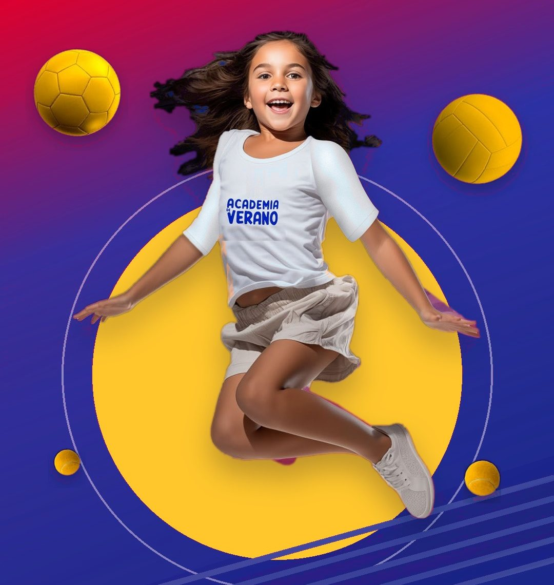

¡El Stade brilló en la Coppa Italia 2026!
La Coppa Italia 2026 fue una nueva oportunidad para que nuestros tenistas demostraran su nivel, compromiso y orgullo por representar al Stade Français. En las canchas del Stadio Italiano, nuestros equipos de damas, varones adultos y menores fueron protagonistas de una competencia que dejó grandes resultados y motivos para celebrar.

En damas adultas, nuestros tres equipos se quedaron con la medalla de plata en las categorías A, B y C, reflejando la fuerza y el gran presente del tenis femenino del Stade.
En varones adultos, el club celebró el título de la categoría 35+ A, además del subcampeonato en 45+ A y la presencia de otros tres equipos en semifinales. Los menores también se hicieron presente con grandes actuaciones, sumando los subcampeonatos de varones 14 y varones 16, junto con una semifinal en damas 16.
En total, entre varones adultos y menores, el Stade Français consiguió un título, tres subcampeonatos y cuatro semifinales, una cosecha que refleja el esfuerzo y el nivel de nuestros representantes.
¡El equipo rojo es el campeón de la Copa Laver 2026!
Tres días de tenis y Comunidad StadeFueron tres días de mucho tenis y Comunidad Stade, en esta edición de la Copa Laver que reunió a 159 jugadores en cancha y 107 partidos disputados, con un total de 68 triunfos para el equipo azul y 91 para los rojos. La celebración combinó competencia, compañerismo y amistad.


Destacada participación del Stade en el circuito de tenis senior
Nuestros tenistas tuvieron una destacada actuación en los torneos MT200 del Club Providencia y del Country Club, sumando títulos y finales en distintas categorías del circuito de tenis senior.
Felicitamos a todos nuestros representantes por sus resultados y por seguir representando al Stade Français en el circuito de tenis senior.

Cristian Barrales llegó a dos finales en el MT700 de Tacna
Nuestro socio y tenista Cristian Barrales tuvo una destacada participación en el World Tennis Masters Tour MT700 Ciudad de Tacna 2026, disputado del 5 al 10 de octubre en Perú.
El representante del Stade Français alcanzó las finales de singles y dobles, demostrando su nivel competitivo en una nueva experiencia dentro del circuito internacional de tenis senior.


Un octubre para compartir en comunidad
El Halloween se tomó la piscina del Stade Français
Rama de NataciónLa Natación del Stade Français celebró Halloween con una entretenida jornada en la que los disfraces, la creatividad y el entusiasmo fueron los grandes protagonistas.
Durante la actividad, nuestros nadadores dejaron de lado por un momento sus habituales entrenamientos para sumarse a esta celebración, sorprendiendo con originales disfraces que llenaron la piscina de color y diversión. Brujas, personajes de terror y distintas propuestas dieron vida a una jornada especial, donde no faltaron las sonrisas y el buen ambiente que caracteriza a nuestra comunidad.
Este tipo de iniciativas permiten compartir más allá de la práctica deportiva, fortaleciendo los vínculos entre quienes forman parte de nuestro equipo de natación y generando nuevas instancias para disfrutar de la comunidad.
Una celebración diferente que combinó deporte, compañerismo y mucha creatividad, demostrando que en el Stade Français también hay espacio para disfrutar, compartir y crear recuerdos dentro y fuera del agua.
Una visita llena de historia y legado en el Stade Français
El Stade Français tuvo el privilegio de recibir a Carol Lizana y su familia, en un encuentro marcado por la historia del tenis chileno.
Carol, hija de Anita Lizana, una de las máximas exponentes del deporte nacional, compartió parte del legado de su madre, quien en 1937 se convirtió en la primera latinoamericana en alcanzar el número uno del mundo y conquistó el título individual del US National Championships, actual US Open.
Una trayectoria histórica que abrió camino para el tenis chileno y que sigue inspirando a nuevas generaciones.
Durante su visita, Carol y su familia también extendieron una invitación a participar del World Tennis Masters Tour MT1000 Santiago by MG Difor, que se realizará en nuestro club entre el 14 y el 22 de noviembre.
Vuelve la Academia de Verano Stade Français 2027
Este verano, el Stade Français vuelve a convertirse en un espacio de encuentro, aprendizaje y diversión para niños y niñas de 4 a 13 años, con una propuesta que combina deporte, juego y arte.
La Academia contará con 34 talleres, tres piscinas y un equipo de profesionales que acompañará a los niños durante cada jornada, incluyendo profesores, educadoras, salvavidas, enfermeras y psicóloga.
La actividad se desarrollará en tres periodos, entre el 4 de enero y el 12 de febrero, con alternativas de media jornada (8:30 a 13:00 horas) y jornada completa (8:30 a 17:30 horas), esta última con almuerzo y snack incluidos.
Las inscripciones para socios comenzaron el 28 de octubre, mientras que el público general podrá inscribirse desde el 2 de noviembre. Los cupos son limitados y se reservan una vez realizado el pago en la oficina de Atención al Cliente del Club, ubicada en Av. Mariano Sánchez Fontecilla 498.
Inscripciones y consultas: WhatsApp +56 9 8587 4540 · stadefrancais.club
Una invitación a disfrutar el verano, hacer nuevos amigos y vivir grandes experiencias en el Stade Français.
